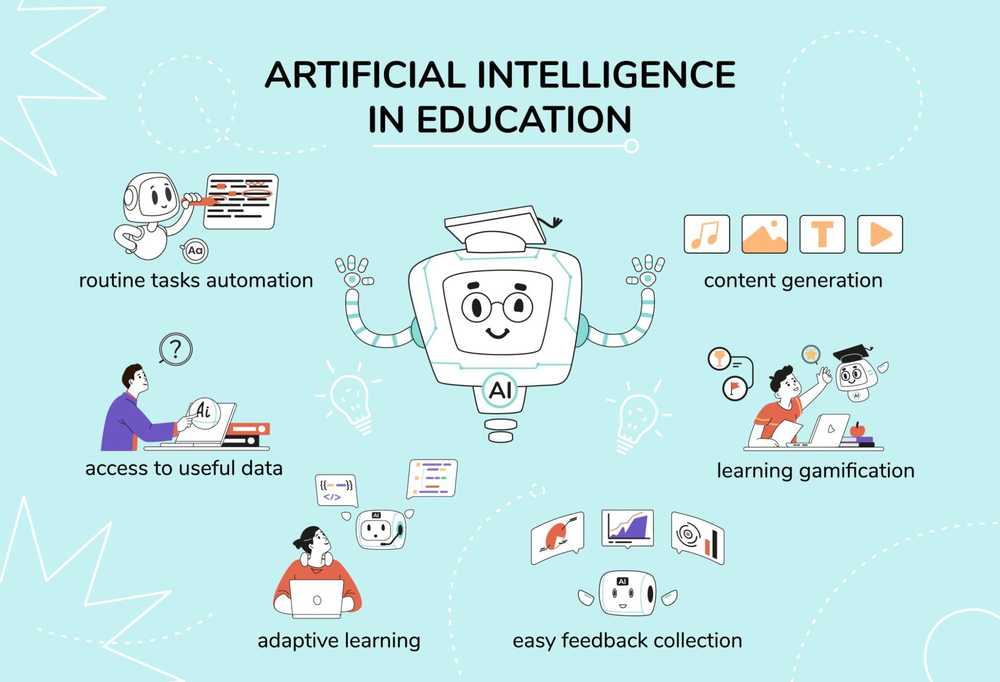
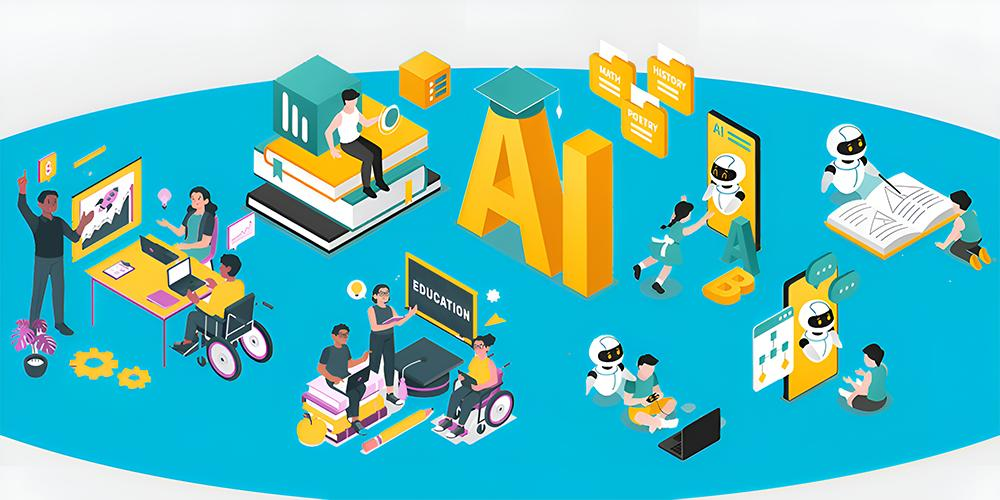
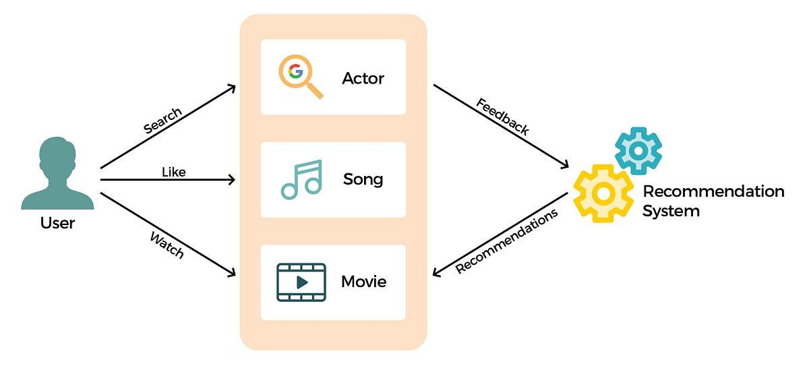
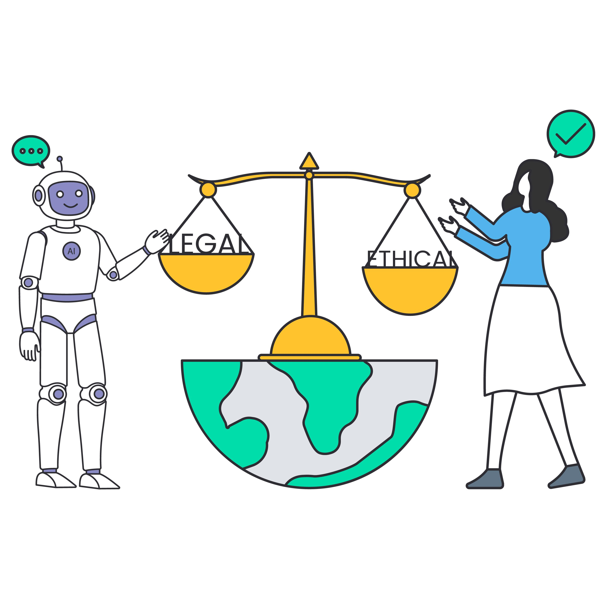
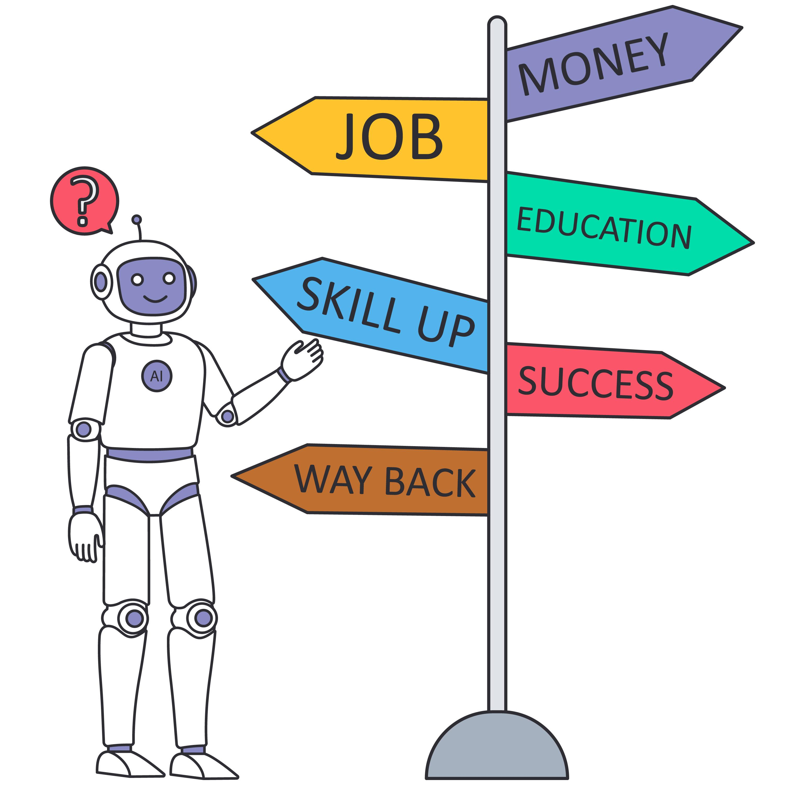
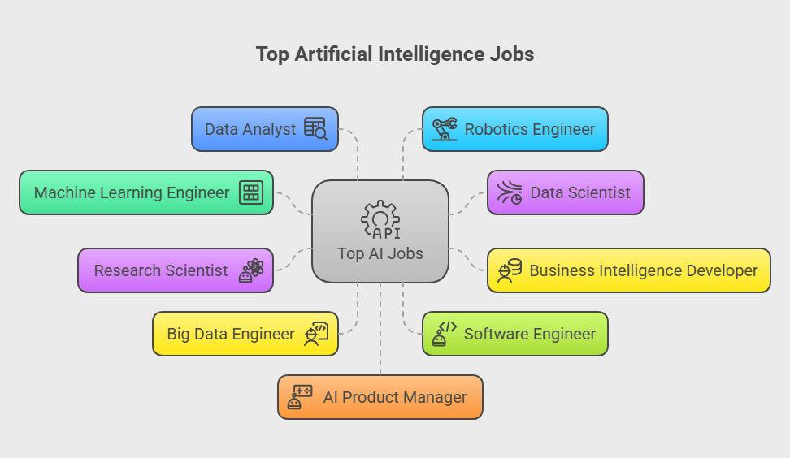

Preparing Students for AI
AI-Ready Education
Preparing students for AI refers to the process of equipping learners with the knowledge, skills, mindset, and ethical awareness needed to understand, use, and interact with AI technologies effectively. It is not only about teaching coding or machine learning, but also about developing critical thinking, creativity, and responsible use of AI.
AI readiness goes beyond technical skills; it includes digital literacy, problem-solving abilities, and understanding how AI impacts society, education, and future careers.
Scope:
- Basic understanding of AI concepts (e.g., automation, algorithms, data)
- Practical use of AI tools (like chatbots, recommendation systems)
- Ethical awareness and responsible AI usage
- Career readiness in an AI-driven world
- Interdisciplinary learning

Core Components of AI Preparation
Digital and AI Literacy
Students must first understand how AI works in everyday life, recognizing AI in apps, social media, and online services.
Technical Skills
Basic technical skills such as coding, data analysis, and machine learning help students adapt to future careers.
Critical Thinking
Evaluating AI outputs and questioning results ensures students do not blindly trust AI systems.
Ethical Awareness
Understanding issues like bias, privacy, and fairness helps students use AI responsibly.

Real-World Examples
AI Platforms
Tools like AI tutors help students learn at their own pace.
Smart Assistants
Voice assistants help with tasks, showing daily AI interaction.

Ethical and Social Implications
Students must avoid misuse such as cheating or plagiarism. Understanding data privacy and the Human-AI balance is crucial for supporting human abilities without replacing critical thinking.

Strategies and Challenges
Schools should focus on Curriculum Integration and Teacher Training. However, challenges like the Digital Divide (Access to Technology) and Rapid Technological Change must be addressed.

Summary
Preparing students for AI is essential. It equips them with the technical skills and ethical awareness needed to succeed as innovators and responsible digital citizens.
